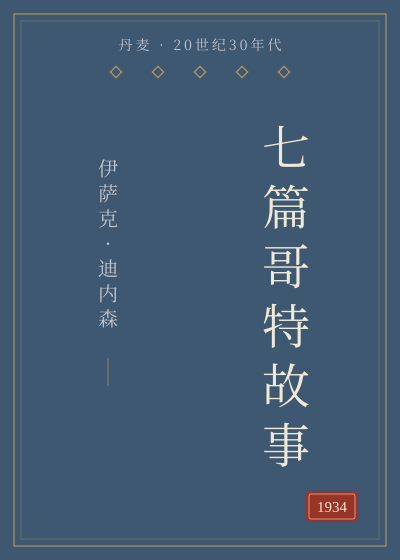
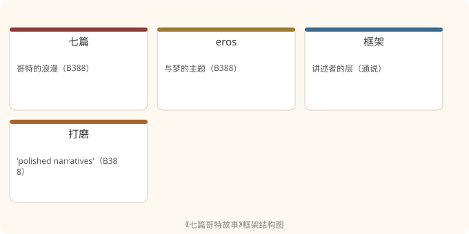

七篇哥特故事
一、基本信息
| 作者 | 伊萨克·迪内森 |
|---|---|
| 成书/出版 | 1934年（Britannica B388：Seven Gothic Tales (1934；丹麦题 Syv fantastiske fortællinger)——'highly polished narratives in the Romantic tradition'） Isak Dinesen — Encyclopaedia Britannica（百科全书） |
| 国别/地区 | 丹麦 |
| 时代 | 近代 · 20世纪30年代 |
| 体裁 | 短篇小说集 |
| 语言 | 英语 |

《七篇哥特故事》框架结构图（主题·结构图）
二、创作背景
Britannica（B388）：'highly polished narratives in the Romantic tradition'——'incorporate the themes of eros and dreams'。
Britannica（B388）：迪内森——'She initially wrote first in English and then rewrote her books in Danish'。
题材（通说待核）：《数风暴的人》等七篇——'eros 与梦'的哥特浪漫。
三、内容脉络
（通说待核）七篇的框架故事与讲述者。
（通说待核）'哥特'的浪漫化（通说待核）。
四、主要人物表
| 人物 | 身份 | 说明 |
|---|---|---|
| 众讲述者 | 框架人物 | （通说待核） |
五、主题与艺术特点
- 'eros 与梦'（B388：incorporate the themes of eros and dreams）。
- '浪漫传统的打磨叙事'（B388）。
- '先英文后丹麦文'（B388）。
六、影响与评论
- Britannica：'highly polished narratives in the Romantic tradition'（B388）。
Isak Dinesen — Encyclopaedia Britannica（百科全书） - Britannica：'eros and dreams'（B388）。
Isak Dinesen — Encyclopaedia Britannica（百科全书）
七、阅读建议
难点
- 框架叙事的层。
- '哥特'的浪漫化。
- 《七篇哥特故事》中译名（《七个哥特式故事》）待核。
- 英文原版。
迪内森虚构篇；与《走出非洲》对读。
八、待核实
- 七篇篇名核对（通说）。
- 1934年出版（Random House说）待核。
- '打磨叙事'评价核对（B388已载）。